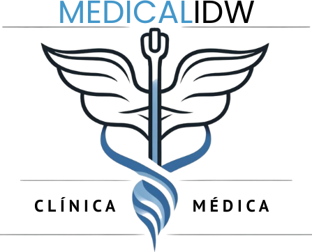

TRAUMATOLOGÍA
SERVICIOS ESPECÍFICOS
Atención integral para el diagnóstico, tratamiento y rehabilitación de lesiones del sistema musculoesquelético.
Tratamiento de Fracturas
Manejo integral de fracturas simples y complejas con técnicas de reducción abierta y cerrada.
Artroscopía
Cirugía mínimamente invasiva para diagnosticar y tratar problemas articulares de rodilla, hombro y cadera.

Rehabilitación Postquirúrgica
Programas personalizados de fisioterapia para recuperar movilidad y fuerza después de intervenciones quirúrgicas.
Consulta Traumatológica
Evaluación y diagnóstico especializado de lesiones óseas, articulares, musculares y tendinosas.
EQUIPO MÉDICO
Nuestro equipo de traumatólogos altamente especializados está comprometido con tu recuperación y bienestar musculoesquelético.

Dr. Eulogio Ramon Sarmiento
Traumatología y Cirugía Ortopédica - Especialista en Cadera y Rodilla
Más de 15 años de experiencia en reemplazos articulares y cirugía reconstructiva. Miembro de la Sociedad Argentina de Ortopedia y Traumatología.

Dra. Paola Suarez
Traumatología Deportiva y Artroscopía
Especialista en lesiones deportivas y cirugía artroscópica de rodilla y hombro. Formada en técnicas avanzadas de reconstrucción ligamentaria.

Dra. Beatriz Gallardo
Traumatología Infantil y Columna Vertebral
Especializada en problemas ortopédicos pediátricos y deformidades de la columna. Experta en escoliosis y cirugía mínimamente invasiva.